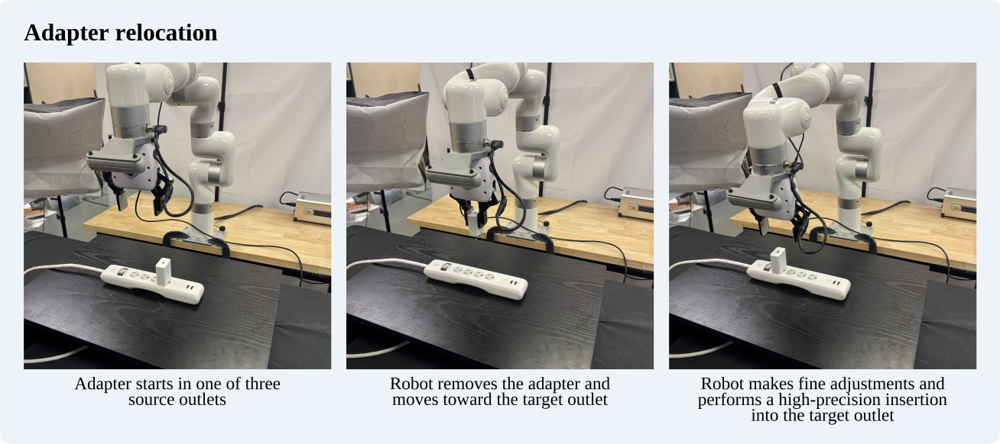

Test-time guidance for frozen flow-based VLAs: the policy’s own attention picks the evidence, a counterfactual withholds it, and the contrast between the two action flows corrects the action. No weights changed, no second model.
Method
Attention selects the task-relevant objects; A2F zeroes exactly those visual tokens in the counterfactual branch.
Withholding the evidence exposes the familiar-goal bias (54.6% → 9.5% at the current goal); adding the contrast back corrects it (83.0%) while the endpoint geometry stays valid.
Simulation
🧪 RoboLab-120
+6.2 points zero-shot, and the gain grows with difficulty (+8.8 on complex tasks).
Success rate (%). Best per column in bold.
Method
Overall
Simple
Moderate
Complex
π0-FAST
15.5
20.2
13.3
2.9
GR00T N1.6
7.2
8.8
7.9
0.0
DreamZero
25.7
26.1
30.0
14.1
π0.5
27.4
30.5
27.2
16.5
Cosmos3
36.8
40.6
35.4
25.3
π0.5 + A2F (ours)
33.7
35.5
34.4
25.3
Δ vs. π0.5
+6.2
+5.0
+7.2
+8.8
Cosmos3 + A2F (ours)
40.0
44.8
34.4
34.7
↔️ LIBERO-PRO position swap
The only test-time method that improves all four suites.
Success rate (%) with frozen π0.5. Best per column in bold.
Method
Key technique
Spatial
Object
Goal
Long
π0.5
50.0
17.8
34.4
5.2
ACG
Temporally coherent actions
50.8
16.4
35.4
5.2
CAG
Language masking
49.2
15.2
26.4
1.0
TAG
Classifier-free guidance
51.0
17.6
36.8
6.0
PCD
SAM masking
51.2
5.0
34.0
7.4
CofactVLA
44.8
18.4
26.8
2.8
A2F (ours)
Counterfactual attention guidance
59.2
24.6
38.2
6.8
Δ vs. π0.5
+9.2
+6.8
+3.8
+1.6
Real world
🦾 Tasks
Three tasks that each end in a fine alignment the policy must servo to.
1Cable insertion2Adapter relocation

3Burette dispensing
📊 Success rates
A2F raises success on every evaluated task and backbone, applied at test time to the same frozen policy.
Success rate (%). “–” = not run.
Backbone
Method
Cable insertion
Adapter relocation
π0.5
Base
30.0
20.0
PCD
59.2
33.3
TAG
–
30.0
A2F (ours)
74.7
62.5
StarVLA
Base
24.0
0.0
A2F (ours)
56.0
43.0
🎯 Servoing
A2F keeps converging into the expert band where π0.5 plateaus in position and drifts in orientation.
Analysis
The instruction words locate the evidence from layer 3; the action expert only catches up at layers 11–13. A2F reads layer 12, where the two meet.
BibTeX
@article{a2f2026grounding,
title = {Grounding Generalist Policies via Attention-Guided Action Flows},
author = {Anonymous},
journal = {Under review},
year = {2026}
}